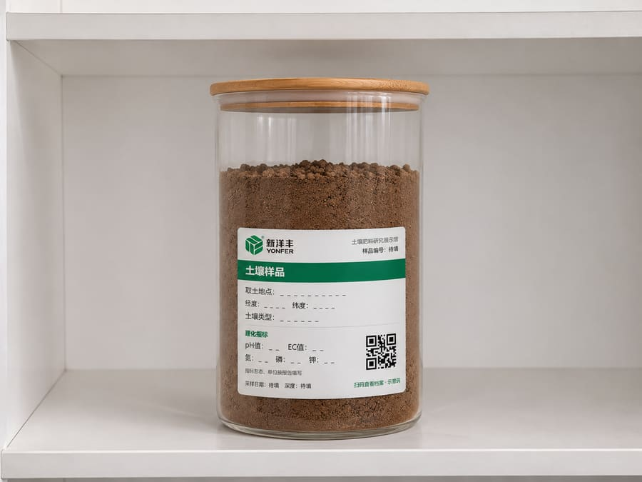

一瓶土样，一份可追溯的档案
土壤样品档案
了解它来自哪里、检测了什么，以及它的研究价值。

AI贴瓶效果示意 · 非真实样品照片演示档案 · 编号待分配
土壤类型待核实
正式上线后，此处展示瓶身编号对应的真实土样信息。
- 取土地点
- 待补充
- 主要作物
- 待补充
- 采样日期
- 待补充
- 采样深度
- 待补充
01从哪里采来
查看采样现场照片
尚未提供现场照片。正式档案可展示采样环境、取样过程与土壤剖面。
02检测结果是什么
以真实检测报告为依据；资料补齐前，不判定养分高低或土壤问题。
pH值—待检测数据无量纲 · 方法待确认
EC值—待检测数据单位及方法待确认
氮—待检测数据检测形态及单位待确认
磷—待检测数据检测形态及单位待确认
钾—待检测数据检测形态及单位待确认
这些指标分别表示什么？
pH表示酸碱性；EC即电导率，用于反映可溶性盐分状况，解读时需结合测定方法。氮、磷、钾是植物营养相关指标，不同测定形态代表的含义不同，不能混用。
检测方法与数据来源
- 检测机构
- 待补充
- 报告编号
- 待补充
- 检测日期
- 待补充
- 检测方法
- 待报告确认，包括EC浸提条件及氮磷钾具体形态
03这份土有什么研究价值
待补充真实样品的特点、采集目的与研究背景。
若有对应试验，可在这里展示试验设计、改良措施及有依据的结果。
查看关联试验与施肥研究
暂无关联资料。补充试验地点、作物、处理措施和验证结果后展示。
04原始检测报告
检测报告尚未提供
正式页面可查看或下载对应样品的PDF报告。